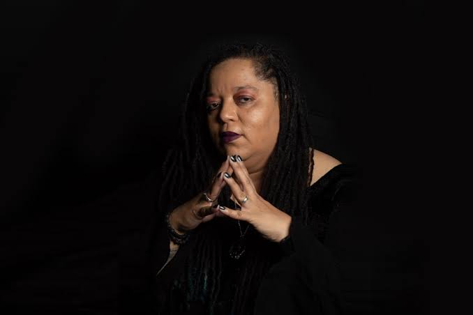
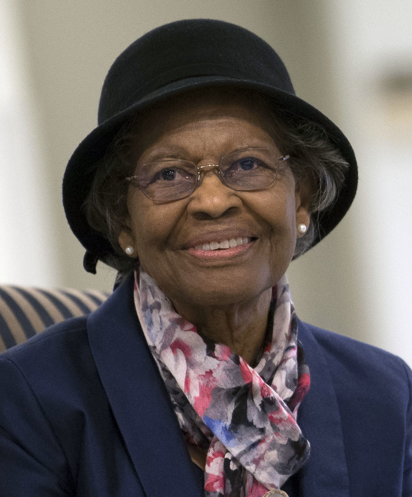

Adeline's Tech hero
Tanya is a cypheroftyr, game journalist, streamer, and activist. She is best known for founding the #INeedDiverseGames movemen of 2014. This later evolved to the Chicago-based non-profic I Need DIverse Games in 2016. This organization helps marginalized developers attend and partner with key industry events. The movement began with the hope to bring more diverse characters into the video game world, and support underrepresented people within the industry. This is very relevant to me because I hope to go into the video game industry after I graduate. Many main video game characters are strong white men, and I think it is critical to bring more diversity into the world of game design as it allows for more players to see themselves in games, and to have a wider representation in entertainment.

Sara's Tech hero
Gladys West is a mathematician whose work helped create the GPS technology we use today. She used satellite data to create detailed models of the Earth, which helped make GPS more accurate. I chose her because I think it is really interesting that her work is something we use every day, but not many people know about her. As someone interested in technology, I think her story shows how important it is to recognize people from different backgrounds who have contributed to technology.
Mark's Tech hero
ITA Madison is a precollege program that I was a part of throughout highschool. ITA stands for "Information Technology Academy." Ron Jetty was the head of the program throughout my time there. He made me feel welcomed since the very first day and helped introduce me to a variety of aspects of technology during the program. These included programming, photography, photo and video editing, etc. I see Ron as a "tech hero" for me as he played a crucial role in me choosing to pursue a career that revoles around technology. He continues to impact the Madison community through his work and was named in "Wisconsin’s 24 Most Influential Native American Leaders" by Madison 365.